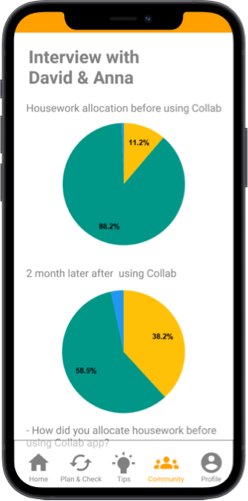
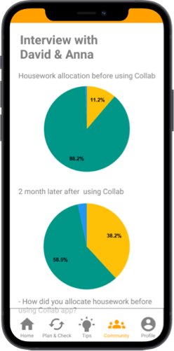

Fogg Behavior Model
I used this model invented by B.J.Fogg, an American social scientist and the founder and director of the Stanford Persuasive Technology Lab to decide how to approch the problems.
Since a partner of the target user is lack of ability to be aware of when to clean the house, while the person agrees to do housework, I set increasing the ability as the first goal.
The second goal is to increase the motivation to keep doing housework to palce the behavior on the ideal behavior.
Fogg's Swarms of Behavior & Golden Behaviors
To define new and effective behaviors to achieve the goal, I used this 2x2 that aligns impact and easeness of behaviors as axis.
I chose a log to increase awareness of housework, and chose media such as pictures and videos to educate housework skills.
Outcome / Changes Design Matrix
Self determination theory fit into this project well because it would be ideal that a partner spontaneously takes care of housework.
I used O / C Matrix to consider how to transact from complying change to behavior and attitude change, and how to make a behavioral cycle from forming outcome to alterning and reinforcing outcome.
Four Categories for Persuasive Software Features
To substantiate persuasive theories into software features, I used four categories.


 
